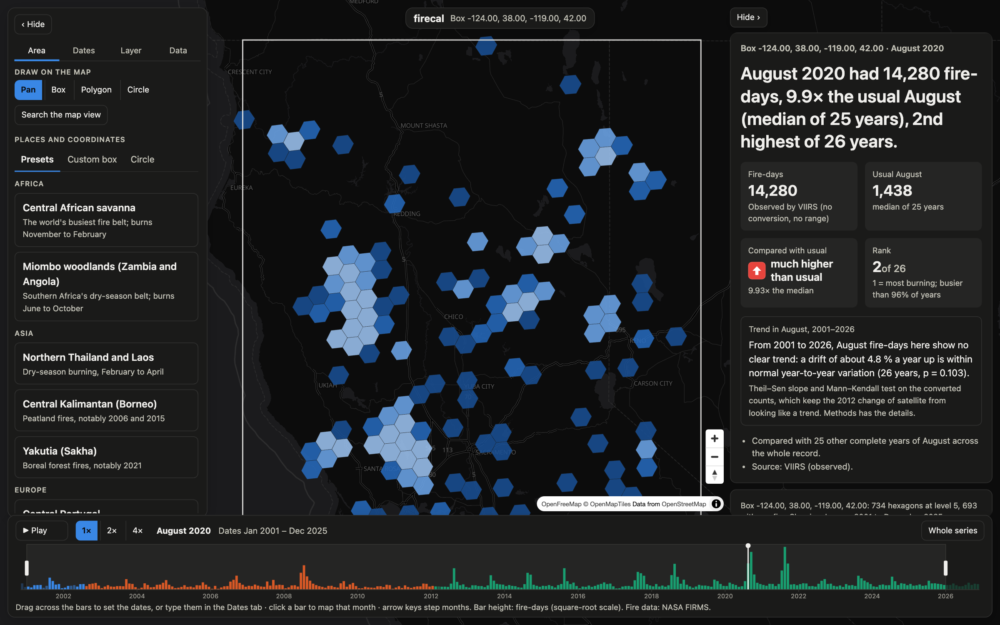

One unbroken fire calendar from 26 years of satellite fire detections.
Team Chiral Labs
Andrew Baik
VIIRS reports about 5× as many hotspots as MODIS for the same fires.
A raw 2001–2025 series mistakes a new instrument for more fire.
Responders, land managers and scientists need to know: is this season unusual here?
Every method change is judged by keep/reject rules written down before seeing the results (PREREGISTRATION.md). Globally, each continent is fitted and judged on its own.

Leave-one-year-out over 2013–2022. Trend uses Theil–Sen and Mann–Kendall on converted counts, so the 2012 satellite change is not read as a rise.
Open source: Python, DuckDB, H3, Rust, SvelteKit, MapLibre. Basemap © OpenStreetMap contributors, OpenFreeMap.
Code, methods and the full AI usage log: github.com/strychemi/firecal